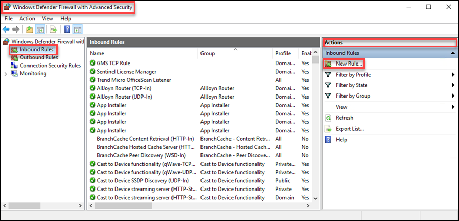
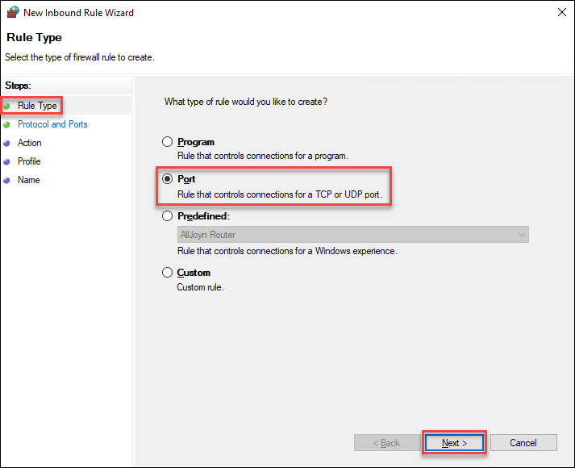
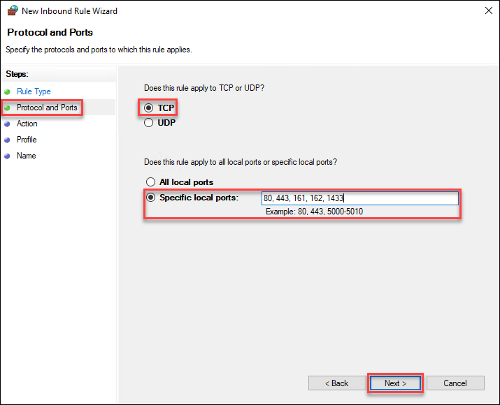
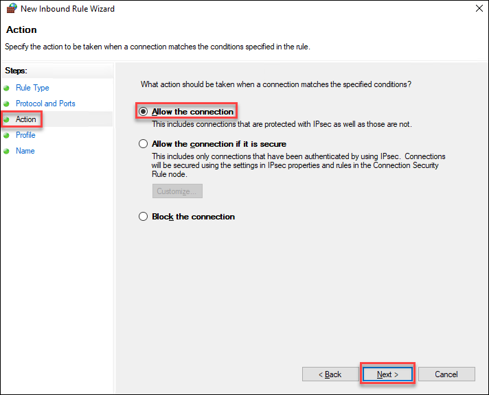
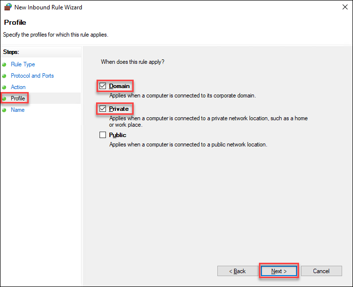
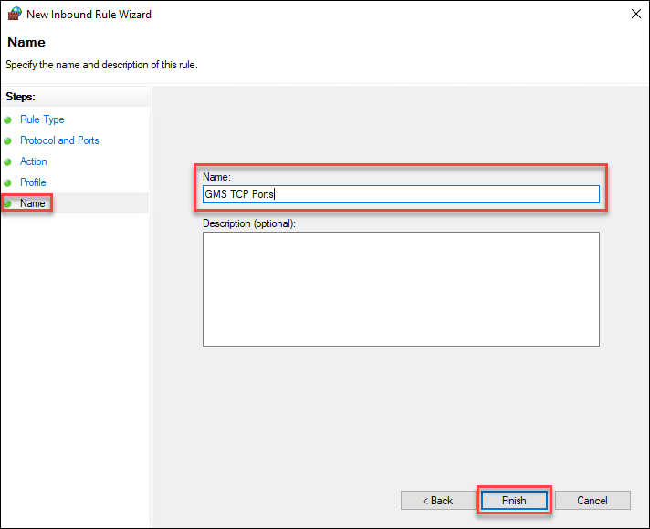

Configure Windows Defender Firewall Settings and Firewall Software
Firewalls restrict the execution of processes that open ports for the communication.
Correctly configured firewall settings allow access between the server and clients, between distribution participant servers and also between drivers and subsystems.
To achieve communication between these elements, specific TCP and UDP ports must be added as exceptions to the server firewall and any network firewalls.
Work with the IT department to make sure the required ports are open in the Windows firewall and any network firewalls are installed between the Desigo CC server and clients.
For a complete list of TCP and UDP ports that you should add to the server firewall and any network firewalls between the server and clients, distribution participants and the server and field panels for a safe system operation, see Cybersecurity Guidelines (A6V11646120) document.

NOTE:
Do not open a port for a program you do not recognize!
Ports that are not required for system operation must be closed for security purposes
You must complete these steps twice, once to add the TCP ports and again to add the UDP ports.
- Click the Windows Start button.
- In the Search field, enter Windows Defender Firewall.
- In the Windows Defender Firewall with Advanced Security dialog box, click Inbound Rules.
- From the Actions pane, click New Rule.

- The New Inbound Rule Wizard displays.
- From Rule Type, select Port, and then click Next.

- From Protocol and Ports, select TCP.
- In the Specific local ports field, type all the TCP ports required for the server, and then click Next.
- You can specify multiple port numbers, separated by commas (for example, 80, 443, 161, 162, 1433, 1434, 1454, 4777, 8888, 8000, etc.), or you can include a range of port numbers by separating the two values with a hyphen (-).

- From Action, select Allow the connection, and then click Next.

- From Profile, select Domain and Private, and then click Next.

- In the Name field, type the name for this rule. (For example, GMS TCP Ports.)
- (Optional) Type additional information in the Description field.
- Click Finish.

- Repeat steps 7 to 13 for all UDP ports, replacing TCP with UDP.
NOTE:
You do not need to read this topic if you have a UL Listed Comark management station, as the firewall settings are a part of the default configuration.
Firewall Software
Desigo CC Server, FEP, and Installed Clients are compatible with the following firewalls:
Professional Firewalls (HW)
- Norton™ Security (©1995-2015 Symantec Corporation)
- Dell SonicWALL security (© 2015 SonicWALL L.L.C.)
- Check Point Next Generation Firewalls (©2015 Check Point Software Technologies Ltd.)
- Cisco PIX Firewall Software
Workstation Firewalls (Personal Firewalls)
- Comodo Firewall (© 2015. Comodo Group, Inc.)
- Kaspersky TOTAL Security (© 1997-2017Kaspersky Lab)
- Bitdefender® Total Security (Copyright © 1997-2017 Bitdefender)
- McAfee End Point Security (© 2017 McAfee, Inc.)
- ZoneAlarm (ZoneAlarm® 2015 Extreme Security)